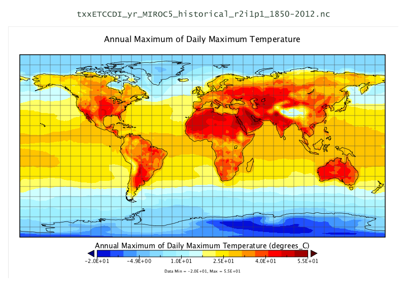

NetCDF adatkészletek¶
Térkép adatok¶
NetCDF (Network Common Data Form) szoftver könyvtárak és önleíró, eszközfüggetlen adatformátumok halmaza, melyek támogatják a mátrix alapú tudományos adatok létrehozását, elérését és megosztását. A NetCDF 4.0 és a későbbi verziók a HDF formátummal dolgoznak, mely nagy mennyiségű numerikus adat tárolására és szervezésére terveztek.
Ez a minta adathalmaz a napi maximális hőmérséklet éves átlagát és az öt egymást követő nap éves maximum csapadék értékét tartalmazza, mindkettő történeti és becsült adatok az 1850-2012 és 2006-2100 évekre (lásd a mellékelt szövegfájlokat a részletekért).
Adatszolgáltató a University of Victoria PCIC (Pacific Climate Impacts Consortium), együttműködében az AORI (Atmosphere and Ocean Research Institute, The University of Tokyo, Chiba, Japan), NIES (National Institute for Environmental Studies, Ibaraki, Japan), JAMSTEC (Japan Agency for Marine-Earth Science and Technology, Kanagawa, Japan) szervezetekkel.
{kind=link}
Részletek¶
Honlap: https://wiki.osgeo.org/wiki/Category:Education
Licenc: Creative Commons Attribution-ShareAlike 3.0 Unported (CC BY-SA 3.0)
Adat verzió: 2013
Adatformátum NetCDF, HDF5
Térbeli koordináta-rendszer: EPSG:4326, NAD83